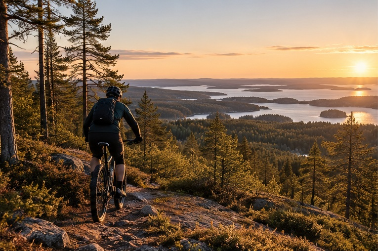
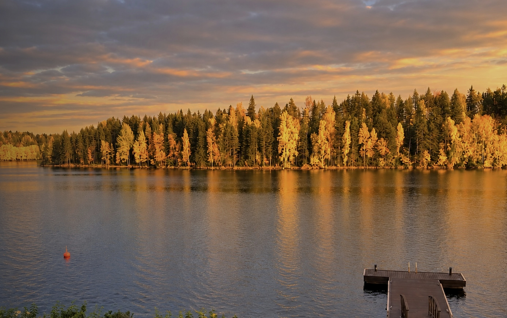
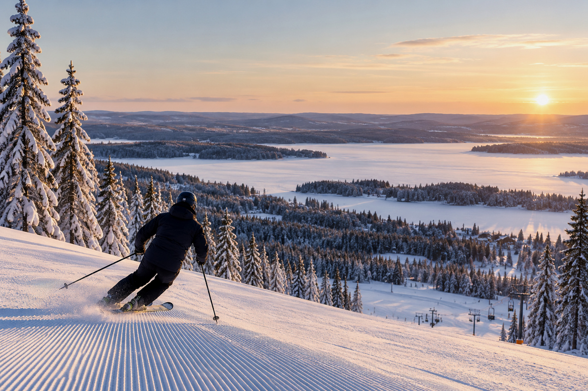
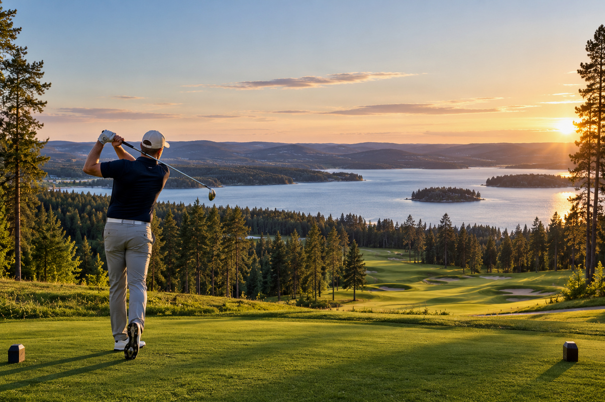
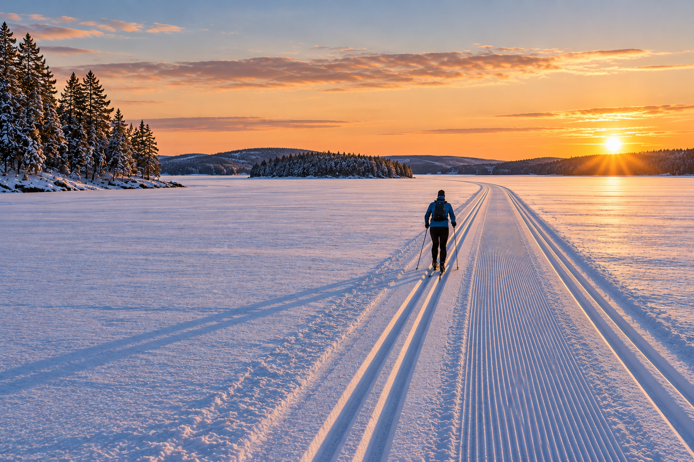
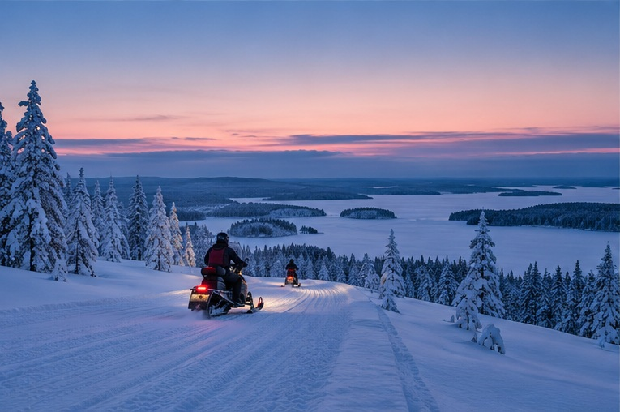
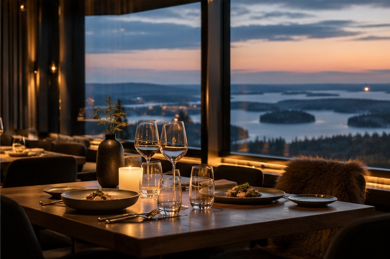
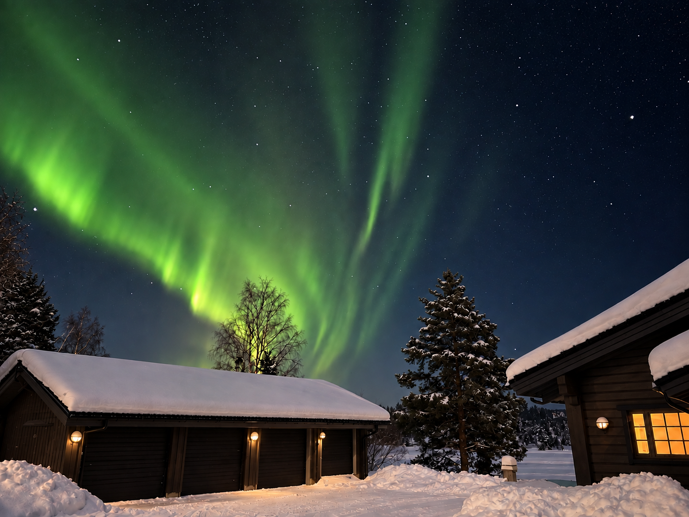
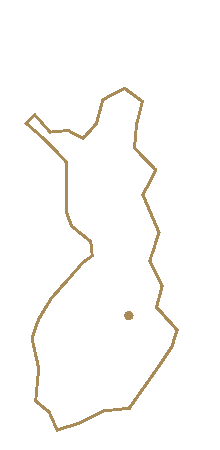

山地骑行
从别墅直接出发
塔赫科的骑行线路距离别墅很近，可直接从这里骑车进入步道网络。
Tahko 骑行线路网络

位于塔赫科湖畔的私享居所，滑雪、高尔夫、餐饮以及全年交通连接都近在咫尺。

精心维护的雪道和完善的冬季度假区就在身边。从别墅前往塔赫科滑雪区十分便捷，滑雪可以自然融入每一个冬日。

Tahko Golf 让这里的夏季与冬季滑雪同样精彩。Old Course 坐落在 Syväri 湖畔，Lake & Forest 则提供另一处近在咫尺的选择。
这些并非彼此独立的目的地，而是这个位置真正便利之处的一部分——每一项都足够近，可以自然融入您的停留。

塔赫科的骑行线路距离别墅很近，可直接从这里骑车进入步道网络。

冬季，维护良好的湖上滑雪道就从私人湖岸前方开始。

冬季，官方雪地摩托路线距离别墅约 50 米。

塔赫科村的优质餐厅距离很近，轻松即可享受一晚外出用餐。

在这样的北纬地区，晴朗而黑暗的夜晚有时会让极光直接出现在别墅上空。这张照片就拍摄于别墅庭院——提醒着人们，Tahko 不只是湖畔，更有鲜明的北欧气质。
以下为从 Lakeside Villa & Spa 出发的大致实际距离。越野滑雪可从私人湖岸直接进入；官方雪地摩托路线距离约 50 米。
这里足够私密，却并不与世隔绝。宾客可搭乘飞机抵达 Kuopio，经火车抵达 Siilinjärvi，或直接驾车前往 Tahko。
